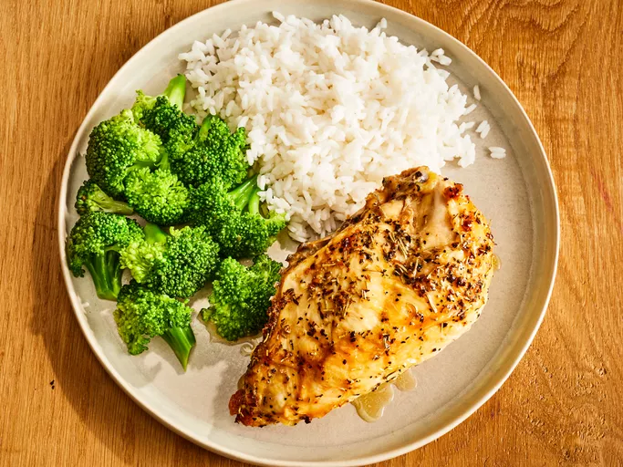

Chicken Breast

Description
Turn chicken breasts into a golden, crispy,
garlicky, and juicy herb-infused chicken dish
that doesn't shy away from big flavor.
Ingredients
- 2 large bone-in chicken breast halves with skin
- 1/4 cup extra-virgin olive oil
- 1/2 teaspoon garlic, minced
- 1/2 teaspoon coarse sea salt
- 1/2 teaspoon cracked black pepper
- 1/4 teaspoon dried rosemary
- 1/4 teaspoon dried basil
Steps
- Gather all ingredients.
- Rub chicken breasts with olive oil and garlic;
sprinkle with salt, black pepper, rosemary, and basil.
Arrange chicken in a large baking dish.
- Refrigerate for at least 45 minutes.
Meanwhile, preheat the oven to 375 degrees F
(190 degrees C).
- Bake in the preheated oven until chicken meat
is no longer pink at the bone and the juices run clear,
45 to 60 minutes. An instant-read thermometer
inserted in the thickest part of the breast meat
should read 165 degrees F (75 degrees C).
- Serve hot and enjoy!